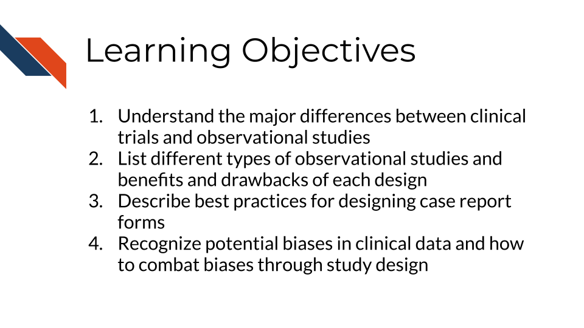

4 Clinical Study Design and Considerations
In this chapter, we describe a variety of clinical study designs (distinguishing between a clinical trial and an observational study, and several common types of observational studies) and discuss several considerations for collecting data and conducting studies. We provide an in-depth description of case report forms and discuss possible types of bias in clinical studies.
Throughout this chapter, we will use the word outcome to refer to the health-related effect that we would like to study, often the occurrence of a disease or condition. We use the term exposure to refer to a factor that may influence the outcome and that differs across groups being compared. An exposure may be a treatment, behavior, environmental factor, genetic characteristic, or demographic attribute. We use the term intervention to refer to an exposure that is deliberately assigned by researchers within a clinical trial. The goal of many clinical studies is to understand the relationship between an exposure or intervention and an outcome.
4.1 Learning Objectives
4.2 Types of Clinical Studies
Clinical studies are major scientific initiatives in which researchers and clinicians collect data about groups of patients, typically organized around a specific treatment, exposure, or health outcome. The ability to analyze and interpret this data enables researchers to answer a variety of important questions that directly impact patient care, treatment decisions, and healthcare policies.
4.2.1 Clinical Trials
Clinical trials are tightly regulated studies, controlling patient recruitment and monitoring the administration and impact of treatments or interventions (“What Are Clinical Trials and Studies?” 2023).
The NIH’s definition of a clinical trial is “a research study in which one or more human subjects are prospectively assigned to one or more interventions (which may include placebo or other control) to evaluate the effects of those interventions on health-related biomedical or behavioral outcomes” (“NIH’s Definition of a Clinical Trial,” n.d.).
In this definition, “prospectively assigned” refers to a “pre-defined process (e.g. randomization) specified in an approved protocol that stipulates the assignment of research subjects” in a clinical trial (“NIH Clinical Trials,” n.d.).
Key components of this definition that are necessary for a study to be classified as a clinical trial are:
- Human participants
- The prospective assignment of participants to an intervention
- The goal of evaluating the effects of the intervention
- A health-related biomedical or behavioral outcome
The goals of clinical trials include:
- Assessing the safety and efficacy of new treatments or interventions
- Comparing new treatments or interventions to existing treatment options
- Determining the optimal dosage and administration of treatments or interventions
- Identifying potential side effects or adverse events
Some of these objectives are evaluated through early phase trials, which often have a single-arm design and focus primarily on safety, tolerability, and preliminary evidence of effectiveness. These are typically followed by randomized controlled trials (RCTs), in which participants are randomized to either the treatment arm or a comparator arm, and the effectiveness of the new treatment is evaluated.
Randomized clinical trials are often considered the gold standard for evaluating new clinical treatments or interventions because well-designed randomized trials can support causal conclusions about the effects of interventions on health outcomes. Like other types of scientific experiments, clinical trials are designed to test hypotheses about how changes in one variable, such as a treatment, affect another variable, such as a health outcome. Random assignment helps reduce the influence of confounding factors, making it easier to attribute observed differences in outcomes to the intervention being studied.
Clinical trials can face ethical and feasibility challenges. A trial would not be ethical if an intervention exposed participants to unnecessary risks (for example, giving patients a high dose of a new drug before knowing if there are side effects) or if a trial withheld access to a treatment that is already known to be beneficial (“The Belmont Report: Ethical Principles and Guidelines for the Protection of Human Subjects of Research” 1979) (Alexander 2022). It is not feasible to design a randomized study for a factor that can’t be manipulated with an intervention or treatment, such as genetic factors, sex at birth, or environmental and occupational exposures that occur naturally. In some cases, a trial might be ethical and feasible but too expensive to conduct. In these situations, an observational study may be conducted instead of a trial (Thiese 2014).
4.2.2 Observational Studies
In observational studies, participants are monitored and exposures and outcomes are measured, but there is no intervention or assignment of treatments (Kim 2023). Observational studies are conducted in many situations, such as when a clinical trial is unethical or infeasible, when gathering preliminary evidence before conducting a clinical trial, or when studying the effect of an intervention or treatment in real world practice. There are several major observational study designs, each of which has strengths and drawbacks.
4.2.2.1 Cross-sectional Study
In a cross-sectional study, data are collected at a specific point in time. Cross-sectional studies are often used to ask questions about the prevalence of an exposure or an outcome (typically a disease or condition) in a population at a specific time point (Mann 2003). A cross-sectional study is conducted by measuring every individual in a population or a representative sample from a population. This design is primarily used to estimate the prevalence of an exposure or outcome in a population at a specific time. Because data are collected once and multiple exposures and outcomes can be measured simultaneously, this is a relatively inexpensive type of study, although costs rise as the population and sample size get larger (Lash et al. 2021).
4.2.2.2 Cohort Study
A cohort study tracks a group of study participants across a time period and monitors which participants develop a specific outcome (Mann 2003). Typically the cohort is identified and then followed over time to measure the outcome of interest, although in other cases the cohort is identified after the outcome has occurred and historical data are used to measure past exposures. Some studies include a single cohort, with one or multiple exposures measured at the beginning of the study. In other studies there are two (or more) cohorts, defined by exposure status. Cohort studies are often used to estimate the incidence of an outcome (the number of new cases in a population over a specific time period) and the association between exposure and outcome(s). An advantage of cohort studies is that they can be used to study multiple outcomes at once. When an outcome is rare a cohort study can be inefficient, because it will take a very large cohort to identify a large enough set of cases of that outcome to have adequate power. Additionally, cohort studies can be quite expensive when they follow a large number of participants over a long time period (Lash et al. 2021).
4.2.2.3 Case-control Study
In case-control studies, a group of individuals who have a certain disease or condition are identified as cases, and are compared to a control group of individuals without the disease or condition (Mann 2003). Case-control studies are typically retrospective, i.e. cases and controls are identified after the outcome has occurred or not, and their past exposure is retrospectively measured. Case-control studies are often more efficient and cost-effective when compared to cohort studies, because the number of cases can be pre-specified. This is particularly important for studies of rare diseases. Additionally, a single outcome can be studied in a case-control study (to define the cases and controls) but multiple exposures can be measured and studied. A case-control study can be conceptualized as a sample from a cohort study, in which we take all of the cases from a specific cohort but only a sample of controls (Lash et al. 2021). Often, controls are selected to have similar distributions of potentially confounding characteristics, such as age and sex, as the cases. This selection process is referred to as matching.
4.2.2.4 Prospective or Retrospective?
Prospective and retrospective are terms that are frequently used to describe observational studies. However, these terms are not always used consistently, and different researchers may use them to mean different things. In some contexts, prospective means that participants are enrolled before the outcome has occurred, while retrospective means that participants are enrolled after the outcome has occurred. In other contexts, prospective means that exposures are measured before outcomes occur, whereas retrospective means that data about past exposures are collected after outcomes have already been observed. Finally, some researchers use these terms to distinguish between studies that collect new data for a specific research purpose (prospective) and studies that analyze pre-existing data such as electronic health records or data from previous clinical studies (retrospective) (Lash et al. 2021). Data that were collected originally for the purpose of another research study or for clinical documentation or administration but are then used for new research are more commonly referred to as secondary data.
Because the terms prospective and retrospective are used with multiple different meanings, readers should be careful to understand how these terms are being used in a particular context rather than assuming a single consistent definition.
4.2.3 Meta-analysis
A meta-analysis is a type of study that synthesizes results from multiple studies investigating a common or related research question. By pooling information across studies, researchers can increase statistical power through larger sample sizes, leverage existing data, generate consensus results from a set of studies, and identify gaps or inconsistencies in existing research. However, the validity and interpretation of meta-analysis results depend heavily on the quality of the studies being pooled, as well as methodological decisions, including which studies are included and how information is combined (Schmid, Stijnen, and White 2020).
Conducting a meta-analysis starts with defining the topic and scope, and formulating testable research questions. A set of inclusion and exclusion criteria is established to determine which studies are eligible for review. These criteria often address characteristics such as the participant population, interventions or exposures, outcomes, and study designs. Differences across studies in these factors should be carefully evaluated, as heterogeneity can impact the interpretation and generalizability of results. To increase transparency and reduce the risk of bias in the review process, meta-analyses can be prospectively registered in study registries (Pieper and Rombey 2022). This helps promote adherence to a pre-specified protocol and can also facilitate collaboration among groups working on similar studies.
A major component of a meta-analysis is a systematic literature review to identify relevant studies that meet the inclusion criteria. Once a set of studies is determined, statistical analyses are performed either to summarize aggregated outcomes and results across studies. Meta-analyses benefit from sensitivity analyses, which evaluate how robust results are to alternative analytical choices or the inclusion or exclusion of specific studies.
A mega-analysis, often referred to as an individual participant or patient data meta-analysis, takes a similar approach to a traditional meta-analysis but pools participant-level data from multiple comparable studies instead of combining reported study-level results. This approach requires access to the raw data from the included studies, which may limit the number of constituent studies, and often involves additional effort to harmonize variables and data across studies. However, it allows researchers to analyze all data consistently while providing flexibility in the specific questions asked and the statistical methods used to answer them (Eisenhauer 2021).
4.3 Considerations for Designing Studies
There are several factors to consider when designing studies. In this section, we will focus on designing case report forms and on identifying and reducing sources of bias in clinical studies.
4.3.1 Case Report Forms (CRFs)
In clinical research, case report forms (CRFs) are essential tools for collecting standardized data from study participants or about patients. Note that case report forms are any paper or electronic form that will be filled in at the participant level by participants or clinical team members. By that definition, even a consent form is a case report form! And each clinical study may utilize multiple CRFs (e.g., one for consent, another for medical history, another for reporting any adverse effects). CRFs are useful for several tasks already discussed within this chapter – specifically, documenting adverse events or outcomes or recording demographics and medical history for identifying cohorts. CRFs are also useful for topics this chapter will discuss in later sections (e.g., Retrospective analyses).
Designing CRFs that are sensitive to the different needs of researchers requires careful consideration. Questions within CRFs should be formulated to gather comprehensive and accurate clinical data. CRFs are often filled out by clinical staff using information from EHR data. In rarer cases, CRFs may be patient/participant-facing. Special care should be taken with these CRFs to ensure that participants feel safe, respected, and comfortable. This section explores the types of questions that can be asked using CRFs with a focus on accessibility, sensitivity, specificity, and comfort for people.
While within a study CRFs help to ensure standardization in data collection, there may be a lack of standardization when comparing data between studies if each study did not use the same CRFs or comparable/subsets of questions within forms. This section will provide guidelines for types of questions that may be found within CRFs and writing these questions. Your specific study needs may also require different or additional types of questions – the guidelines within this section are not exhaustive nor all-encompassing of what may be encountered within the field. Researchers may also benefit from established standards for CRF development, such as the Clinical Data Acquisition Standards Harmonization (CDASH), which provides a consistent way to collect data with CRFs across studies “CDASH” (n.d.).
Different categories of questions that may be included within case report forms include:
- Demographic and Socioeconomic Questions
- Health and Medical History Questions
- Experience and Quality of Life Questions
- Sexual and Reproductive Health Questions
- Treatment Preferences and Decision-Making Questions
- Accessibility and Accommodation Needs Questions
- Cultural Sensitivity and Identity Questions
- Comfort, Trust, and Privacy Questions
Click here for additional considerations for patient/participant facing CRFs.
Although the following recommendations may help your research team write more respectful and responsive CRFs, it is essential to always have an Internal Review Board (IRB) or other institutional ethics review committee perform an ethical review or your final forms for appropriateness and ethical consideration.
- Demographic and Socioeconomic Questions
Capturing demographic and socioeconomic data is fundamental in clinical research to understand the background of study participants. However, these questions must be asked in a manner that respects privacy, avoids assumptions, and helps identify people with different life experiences. It’s also good practice for patient/participant facing CRFs to respect privacy and include options allowing the participants to leave the question unanswered, respond with “prefer not to answer”, or fill in their own answer.
- Sex and Gender: When asking about gender and sex include an option of “prefer to self-describe” to capture more information.
- Ethnicity and Race: Ethnicity and race questions should be specific and use respectful language. Allowing participants to self-identify rather than select from a predefined list can help capture more specific information.
- Socioeconomic Status: Questions about employment, income, or education should be framed to capture social determinants of health without making participants feel judged. For example, asking, “What is your current employment status?” with choices that include full-time, part-time, unemployed, student, and unable to work can help gather relevant data without stigma.
It is essential to use neutral, non-judgmental language and to explain why these questions are being asked, ensuring participants understand the relevance of their responses.
- Health and Medical History Questions
Health and medical history questions provide critical information about baseline conditions and potential risk factors of participants. These questions should be framed clearly and respectfully to avoid any discomfort.
- Medical Conditions and History: Questions about past and present health conditions should use clear, accessible language. For example, “Have you ever been diagnosed with any of the following conditions? (Please check all that apply)” followed by a comprehensive list containing all necessary options.
- Medication Use: Questions about current and past medications should include over-the-counter and alternative therapies, and space should be provided for free-text responses to capture additional details.
- Disability and Functional Status: For many populations, it is important to use person-first language, such as “Do you have any physical, sensory, or cognitive impairments that you would like us to be aware of?” and provide space for participants to describe their specific needs. However, different populations have different preferences. The “Disability Language Style Guide” from the National Center on Disability and Journalism provides some basic guidelines, thorough discussion, and community specific advice on this topic (“Disability Language Style Guide” 2021).
Avoiding medical jargon and providing definitions or examples can help ensure that participants understand the questions, and confidentiality should be emphasized to encourage honest responses.
- Experience and Quality of Life Questions
Understanding how health conditions and treatments affect participants’ daily lives and well-being is essential, particularly for those who may experience unique challenges.
- Daily Living and Social Functioning: Questions like “How often do your health conditions affect your ability to perform daily tasks (e.g., cooking, cleaning, working)?” can help assess the impact on daily life, with options ranging from “never” to “always.”
- Emotional and Psychological Well-Being: Including questions such as “In the past week, how often have you felt anxious or depressed?” using a scale from “not at all” to “very often” can provide insights into mental health needs.
- Support Systems and Social Networks: Asking about social support (e.g., “Do you have someone you can rely on for emotional support?”) can help identify participants’ needs for social and emotional resources.
Using sensitive language and providing mental health support resources where needed is crucial when discussing emotional well-being to avoid triggering emotional distress.
- Sexual and Reproductive Health Questions
Questions about sexual and reproductive health must be asked with sensitivity, as they can be deeply personal, particularly for groups who may face stigma.
- Reproductive Health: Questions about menstrual health, contraception, or pregnancy should be framed neutrally. For example, “Are you currently using any form of contraception? If yes, please specify.”
- Sexual Activity and History: Questions should be direct but framed sensitively, such as “Are there any sexual health concerns you would like to discuss? Your answers will help us understand how to better support your care needs.”
These questions should always be optional, with confidentiality emphasized to encourage honest, comfortable participation.
- Treatment Preferences and Decision-Making Questions
Understanding participants’ preferences for treatment and decision-making is vital for providing patient-centered care, especially for certain groups of people.
- Decision-Making Preferences: Questions like “How involved would you like to be in decisions about your healthcare?” offer a range of choices from “I prefer to make decisions myself” to “I prefer my healthcare provider to make decisions,” allowing participants to express their autonomy.
- Cultural and Religious Considerations: Asking, “Are there any cultural, religious, or personal beliefs that we should consider when discussing treatment options with you?” ensures that care is respectful and culturally appropriate.
- Treatment Burden: Questions such as “What level of inconvenience or side effects would be acceptable to you when considering a treatment?” help to gauge participants’ preferences and comfort levels.
These questions should be framed to respect participants’ autonomy and encourage honest responses without fear of judgment.
- Accessibility and Accommodation Needs Questions
To ensure that all participants can fully engage with the study, it is essential to ask about accessibility and accommodation needs.
- Language and Communication Needs: “What is your preferred language for communication? Do you need an interpreter or translated materials?” These questions help ensure that participants can understand the materials. This requires the researcher to make translated materials available, which will require additional time and effort, including validation that the materials are appropriately translated to allow for collection of comparable data. PROMIS is a great resource for this (https://www.promishealth.org/promis-translations/).
- Physical Accessibility: Asking, “Do you require any specific accommodations to participate in this study (e.g., wheelchair access, hearing aids, visual aids)?” ensures physical accessibility.
- Format Preferences: “Would you prefer to complete this form online, on paper, or verbally with assistance?” helps accommodate different needs and preferences. Providing multiple options and allowing participants to request changes at any time is crucial to accommodate evolving needs where possible.
Providing multiple options and allowing participants to request changes at any time is crucial to accommodate evolving needs.
- Cultural Sensitivity and Identity Questions
CRFs should respect different cultural backgrounds, values, and identities without perpetuating assumptions.
- Cultural Identity and Practices: An open-ended question such as “Are there any cultural practices or beliefs that are important for us to be aware of in your care?” allows participants to share relevant information.
- Dietary Restrictions and Preferences: Asking, “Do you have any dietary restrictions or preferences that are culturally or religiously motivated?” ensures that these are respected.
- Community and Belonging: “Is there anything about your community or background that you would like us to know to provide better care?” encourages participants to share relevant aspects of their identity.
These questions should be open-ended, allowing participants to skip questions they find irrelevant or uncomfortable.
- Ensuring Comfort, Trust, and Privacy Questions
Fostering a sense of safety and trust is especially important for individuals who may have experienced discrimination in healthcare settings.
- Comfort and Confidentiality: Asking, “Do you feel comfortable with the way your information is being collected and stored? Are there any specific concerns you would like to address?” helps build trust.
- Feedback and Preferences: “Is there anything about this form or the study process that you find confusing, uncomfortable, or concerning?” invites participants to share their feedback.
- Consent and Voluntary Participation: Questions like, “Would you like to be contacted about the results of this study or for future research opportunities? Participation is entirely voluntary.” reinforce autonomy and respect.
Reminding participants of the confidentiality and voluntary nature of their involvement can help foster a trusting environment.
The guidelines above sometimes suggest use of open-ended questions where participants would provide free-text responses rather than selecting pre-defined categories. This will require researchers to process those free-text responses and may decrease the overall standardization.
Designing specific and sensitive CRFs for clinical studies requires a thoughtful approach that captures the different backgrounds of all participants. By using accessible language, offering multiple options, respecting autonomy, and providing a safe space for participants to express themselves, researchers can gather meaningful and accurate data while ensuring participants feel valued and respected. These considerations are vital to fostering clinical research that captures enough information about a wide variety of individuals. Case report forms (CRFs) are often tailored to specific studies and may vary widely in structure and content, lacking standardization across different projects. Despite this, certain themes are commonly expected in CRFs, including sections on participant demographics, medical history, treatment outcomes, patient’s feelings about side effects, and adverse events, ensuring essential data collection across a variety of study designs. By thoughtfully addressing both unique study requirements and universally relevant data points, researchers can optimize CRFs for consistency across clinical studies.
4.3.2 Potential Data Distortions in Clinical Studies
Researchers need to consider how data representativeness and other data distortions may affect their study and results in all stages of clinical study development, especially when designing the study.
Overall, cancer research has historically relied on data from high resource academic medical centers, which are often located in cities and disproportionately provide care to patients with certain demographics such as those that have higher incomes, and those who live in urban areas. As a result, medical knowledge produced from these data tend to be more generalizable to other patients of similar demographics and the knowledge is not necessarily generalizable to other different populations.
Such challenges include:
- Information representativeness distortion occurs when certain groups are less present in the clinical data (particularly EHR data) because they have little or no contact with the healthcare system.
- Information presence distortion, on the other hand, occurs when certain groups may be represented in clinical data, but have less comprehensive healthcare data due to issues such as lack of a primary care provider, lack of access to specialty care, and lack of access to digital resources (e.g., patient portals, home sensors, telehealth) that can be used to provide healthcare data.
- Treatment distortions happen when certain groups receive more access to more advanced treatments, which is often determined by social drivers such as insurance, distance, and health literacy.
- Algorithm distortion further amplifies these previous challenges by leveraging distorted clinical data to make predictions about diagnosis, treatment, and prognosis that may only work optimally for some populations but may be used by clinicians to make healthcare decisions for broader populations.
Recent advances in sophisticated and costly technology such as genetic testing, artificial intelligence, and digital health are more available in high resource healthcare systems further compounding these challenges. Therefore, cancer researchers increasingly need to use intentional methods to prevent, identify, and correct for such challenges with clinical data. For example, the National Institutes of Health Pragmatic Trials Collaboratory has made several recommendations (Andrew D. Boyd et al. 2023a; Andrew D. Boyd et al. 2023b):
- Include data from low resource healthcare settings such as community health centers that provide care for patients who tend to have lower incomes and or live in inner city or rural areas.
- Engage with communities during study design and study conduct to ensure proper data collection, analysis, and representation.
- Use data collection methods for self-reported data that rely on more accessible technology such as text messaging, using accessible and culturally adapted communication.
- Include subgroup analysis by different demographic groups.
4.4 Summary
A substantial proportion of clinical data is generated through clinical studies, making careful study design essential for producing reliable and meaningful evidence. Clinical studies can be broadly classified as either clinical trials or observational studies. In clinical trials, researchers prospectively assign participants to interventions and evaluate their effects on outcomes of interest. In observational studies, researchers examine associations between naturally occurring exposures and outcomes. Common observational study designs include cross-sectional, cohort, and case-control studies. Researchers may also conduct meta-analyses to synthesize findings across multiple studies. Beyond selecting an appropriate study design, researchers must consider several factors that influence data quality, including the development of standardized and comprehensive case report forms and the mitigation of common sources of data distortion that can compromise the validity and generalizability of study results.
Alexander, John H. 2022. “Equipoise in Clinical Trials: Enough Uncertainty in Whose Opinion?” Circulation 145 (13): 943–45.
Boyd, Andrew D., Rosa Gonzalez-Guarda, Katharine Lawrence, Crystal L. Patil, Miriam O. Ezenwa, Emily C. O’Brien, Hyung Paek, et al. 2023a. “Equity and Bias in Electronic Health Records Data.” Contemporary Clinical Trials 130 (July): 107238. https://doi.org/10.1016/j.cct.2023.107238.
Boyd, Andrew D, Rosa Gonzalez-Guarda, Katharine Lawrence, Crystal L Patil, Miriam O Ezenwa, Emily C O’Brien, Hyung Paek, et al. 2023b. “Potential Bias and Lack of Generalizability in Electronic Health Record Data: Reflections on Health Equity from the National Institutes of Health Pragmatic Trials Collaboratory.” Journal of the American Medical Informatics Association 30 (9): 1561–66. https://doi.org/10.1093/jamia/ocad115.
“CDASH.” n.d. Clinical Data Interchange Standards Consortium. Accessed August 27, 2026. https://www.cdisc.org/standards/foundational/cdash.
“Disability Language Style Guide.” 2021. National Center on Disability and Journalism. https://ncdj.org/style-guide/.
Eisenhauer, Joseph G. 2021. “Meta-Analysis and Mega-Analysis: A Simple Introduction.” Teaching Statistics 43 (1): 21–27.
Kim, Seonwoo. 2023. “Overview of Clinical Study Designs.” Clinical and Experimental Emergency Medicine 11 (1): 33.
Lash, Timothy L., Tyler J. VanderWeele, Sebastien Haneuse, and Kenneth J. Rothman. 2021. Modern Epidemiology. 4th ed. Philadelphia, PA: Wolters Kluwer.
Mann, CJ. 2003. “Observational Research Methods. Research Design II: Cohort, Cross Sectional, and Case-Control Studies.” Emergency Medicine Journal 20 (1): 54–60.
“NIH Clinical Trials.” n.d. Division of Research at Brown University. https://division-research.brown.edu/research-cycle/proposal/agency-specific/nih/clinical-trials.
“NIH’s Definition of a Clinical Trial.” n.d. https://grants.nih.gov/policy-and-compliance/policy-topics/clinical-trials/definition.
Pieper, Dawid, and Tanja Rombey. 2022. “Where to Prospectively Register a Systematic Review.” Systematic Reviews 11 (1): 8.
Schmid, Christopher H, Theo Stijnen, and Ian White. 2020. Handbook of Meta-Analysis. CRC Press.
“The Belmont Report: Ethical Principles and Guidelines for the Protection of Human Subjects of Research.” 1979. National Commission for the Protection of Human Subjects of Biomedical; Behavioral Research. https://www.hhs.gov/ohrp/regulations-and-policy/belmont-report/read-the-belmont-report/index.html.
Thiese, Matthew S. 2014. “Observational and Interventional Study Design Types; an Overview.” Biochemia Medica 24 (2): 199–210.
“What Are Clinical Trials and Studies?” 2023. National Institute on Aging. https://www.nia.nih.gov/health/clinical-trials-and-studies/what-are-clinical-trials-and-studies.